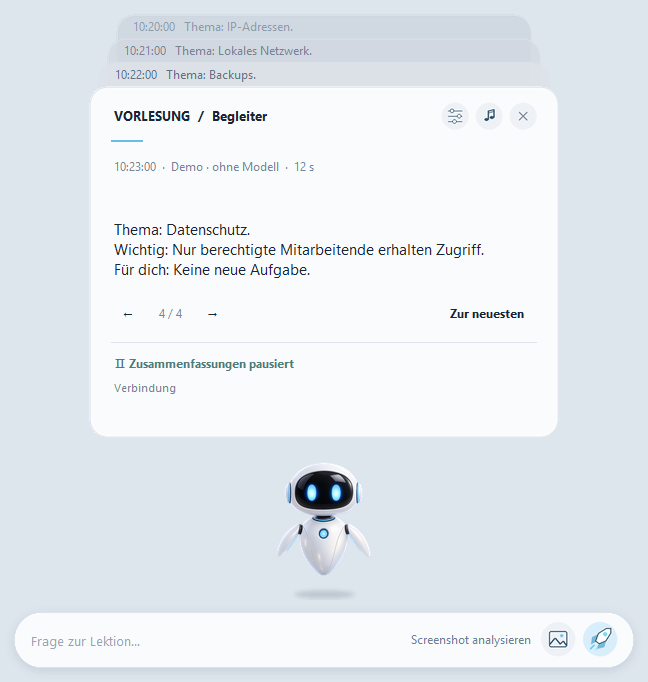

Windows 11 · x64
Lecture Companion
Begleitet Teams-Vorlesungen: fasst Untertitel lokal zusammen und erklärt eine ausgewählte Folie.
Vorabversion · 2.4Vor dem StartTeams Desktop und kompatible Treiber; empfohlen: 32 GB RAM, interne SSD und 25 GB freier Platz für Teile, ZIP und Entpacken. EXE nicht signiert; Prüfung auf einem zweiten sauberen PC steht aus.
Alle vier ZIP-Teile und JoinPortable.cmd müssen im selben Ordner liegen. Das Skript prüft Größen und SHA-256. Danach das Archiv auf einer internen SSD entpacken.


So funktioniert es
- 4 Teile laden und zusammenfügen
- Teams-Untertitel einschalten
- Text oder Folie besprechen
Erste Schritte
Vier Teile und JoinPortable.cmd in denselben Ordner herunterladen (etwa 5,8 GB). JoinPortable.cmd prüft und verbindet sie; ZIP vollständig entpacken und LectureCompanion.exe öffnen.